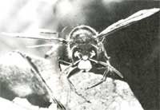
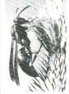
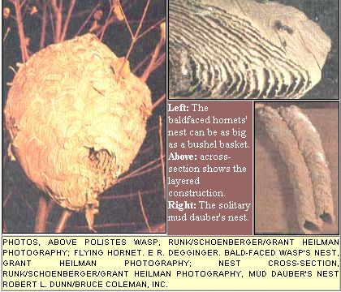
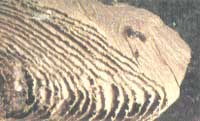
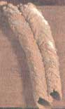

How to get along with your flying neighbors.
Friendly or fierce? Bad or beneficial? When it comes to these summertime residents, both fear and beauty are in the eye of the beholder.
My earliest memories include the time my big brother pushed me out of the hayloft onto a cement floor, the summer morning I toddled off a pier and nearly drowned, and The Day The Wasp Stung Me. I can still recall my terror-overwhelming as only a small child's can be-when the wasp landed on the inside of my shirt collar. Maybe three years old at the most, I took off running pell-mell across the barnyard toward our house, screaming, flailing at the insect. Naturally it stung me. I swatted some more, and it stung me again. By the time my father reached me and brushed the wasp away, my neck and shoulder were dotted with a half-dozen painful red swellings. Luckily, I've never been sensitive to wasp venom, and after a few days of soreness and itching the bites faded away.
Not so the memory. Just as the hayloft incident taught me to think twice before turning my back on my big brother, and falling off the pier gave me a lesson in the difference between bath water and deep water, the wasp stings left a lasting impression. It was a good thing, too, because when you're a boy growing up on a dairy farm, keeping your distance from wasps and hornets is almost as essential as keeping your feet out of cow pies. But I was more than just wary of wasps. I spent most of my young life in compulsive fear of them-and of nearly any insect that looked or even sounded like a wasp. I was convinced that their sole purpose was to attack and sting people (me in particular).
It was only years later, when my interests in nature and the outdoors forced me to come to grips with my fear, that I learned otherwise. Wasps are among the most maligned of all living creatures. They play extraordinary, fascinating roles in nature. As a group, they're the single most effective natural control of earth's agricultural and household insect pests. And though it's true that more people die each year from wasp and bee stings than from the bites of all other venomous creatures, it's also true that wasps and bees are far more mild-mannered than commonly believed, and seldom sting without cause.
For that matter, of the 2,500 or so species of wasps known to inhabit North America, only about 50 can sting at all. What we call a stinger is actually a modified ovipositor, the hollow tube through which female insects deposit eggs. Most wasps use the instrument for that purpose alone. Some species employ the tube to bore holes into tree bark or other vegetable matter in which to lay eggs. Others, such as trichogrammas, the gardeners' allies against cabbage loopers and corn borers, inject eggs into the bodies or larvae of other insects. Only a relative handful of wasps are also capable of injecting venom through their ovipositors, and thus a painful sting. But even of these, virtually all are mild-mannered loners, solitary wasps that ordinarily keep their distance from man and use their venom-loaded hypodermics only to stun spiders, caterpillars or other insects with which to provision their nests. Except when mating, they live their lives alone.
Probably the most familiar of solitary wasps are the mud daubers, which (OK, it's obvious) build their homes with mud. Chances are you've seen the lumpy, dried-mud nests of the black-and-yellow mud dauber (scientifically and appropriately named Sceliphron caementarium ) or the tidier, parallel-tube architecture of the organ pipe wasp ( Trypoxylon politum ). Both species gather mud from the banks of puddles and pools by rolling the clay into pea-size pellets and flying it, one pellet at a time, to a suitable homesite-usually a house or barn wall, a rafter or the eave of a roof. There, spreading mud in overlapping semicircles and buzzing heartily as she works (only females build nests), the wasp plasters together a hollow, tubular cell. As soon as she completes a cell she flies off in search of a spider, paralyzes it with a sting (wasps never use their stingers to kill prey except in self-defense), then grasps it between her jaws and forelegs and flies home. The mud dauber then shoves the stunned insect (or sometimes several of them) into the cell, lays a single egg in the compartment, closes it off and proceeds to build and stock other cells beside or on top of the first. Most dauber nests contain from six to 20 cells, although much larger nests have been recorded.
Once all the cells have been stocked and an egg laid in each, the wasp covers the nest with an outer layer of clay and leaves for good. Soon white, grublike larvae hatch from the eggs and feast on the paralyzed spiders. A few days later, the well-fed larvae spin cocoons in which they pupate, or develop into adult insects. The transformation takes about three weeks, after which each mature wasp chews a small hole in the wall of its cell and flies away to mate. All wasps go through this four-stage process-egg, larva, pupa and adult. As you may remember from biology class (or from Invasion of the Body Snatchers ), this is called complete metamorphosis .
The mud dauber's tendency to build nests on manmade structures and its peculiar habit of buzzing loudly as it works are unfortunate. For those reasons alone, countless nests end up crushed under the butt end of a broomstick or soaked in insecticide. Too bad, because mud daubers are among the meekest of wasps-you virtually have to pick one up and squeeze it to make it sting-and are effective predators of household spiders. One species, in fact-the blue mud dauber ( Chal-byion califomicum )- specializes in capturing black widow spiders. (This dauber is also known as the blue burglar for its habit of breaking into other dauber nests, tossing out all the larvae and spiders.) Other types of daubers prey on cabbage loopers and other garden pests. In short, mud daubers are good wasps to have around.
The creatures most of us think of when we think "wasp" are the social, or paper, wasps: the hornets, yellow jackets and other species that build oval, papery nests in which hundreds or even thousands of individual insects live and work cooperatively, much like bees in a hive.
If you're ever at a gathering of entomologists and the party gets dull, ask someone in a loud voice what the differences are between hornets and yellow jackets (species of the genus Vespula ). Confusion reigns over the distinctions between members of the two groups-to the point where the names are used interchangeably. For the sake of discussion, some naturalists have settled on the essentially arbitrary distinction that yellow jackets build their nests underground or concealed in walls, while hornets (which some scientists assign to a more specialized genus, Dolichovespula ) build pear-shaped, aerial nests suspended above ground. It's as good a compromise as any, though in actual fact the wasps seem not to have the distinction down either, and sometimes build in the "wrong" place. Still, the general rule is hornets above, yellow jackets beneath.
The most common hornets in North America are the bald-faced hornet ( Vespula maculata ) and the sandhill hornet ( Vespula arenaria ). Maculata is a large (one to one-and-a-half inches long), black species with a distinctive white pattern on its face and body. Arenaria is somewhat smaller (about an inch long) and less widely distributed, and has yellow and black stripes (it's often called a yellow jacket). Both types generally build their characteristic globular paper nests in the open, in bushes, trees and on buildings. The bald-faced hornet's nest can become the size of a bushel basket, and the sandhill's may reach the proportions of a soccer ball. The larger the nest, the more aggressively they defend it (this is true of all paper wasps).
Separate yellow jacket species are almost impossible to identify by appearance-they're all about one-half to one inch long, and are yellow-and-black striped-but their nesting habits are distinct. The eastern yellow jacket ( Vespula maculifrons ) and the western yellow jacket ( V. pennsylvanica ) build nests in the ground, often in the abandoned burrows of moles or other animals, or at ground level in brush piles or hollow logs.
Although you can't see them, the nests are much like hornet nests, consisting of several horizontal tiers of honeycomblike cells all enclosed in a paper sheath. The entrance hole to such a nest may be no larger than a quarter, but the nest itself can be as big as, or bigger than, a bald-faced hornet's. Another yellow jacket species, Vespula germanica , builds equally large nests inside the walls of buildings.
Generally speaking, yellow jackets have nastier tempers than other paper wasps, but they are not the maddened winged terrorists so many people make them out to be, and seldom sting, as is often heard, "at the least provocation." The real trouble with yellow jackets is that you can't see the nest until you've blundered across it, either stepping on the entrance or running over it with a tractor or lawn mower. Wall-nesting germanica yellow jackets are similarly hazardous, because they tend to chew away the plasterboard and insulation in a wall until only a paper-thin barrier remains between the nest and the inside of the building. Pity the unsuspecting homeowner who, upon hearing a buzzing and scraping inside a wall, knocks on the surface to locate the source-only to put his fist into a mass of yellow jackets.
The third major group of common paper wasps encompasses a number of similar-looking species all belonging to the genus Polistes . Depending on where you live, these slender, hard-bodied wasps may be brown, rust-colored or black, or they may have yellow or black stripes. They build relatively simple nests consisting of a single, unenclosed comb suspended from a short stem. Because their nests have no roof or walls, Polistes wasps build their homes where they'll be out of the rain-under shed roofs, inside double-hung windows, beneath eaves. Polistes wasps are the gentlest of paper wasps and seldom attack unless provoked. They can inflict a painful sting, though-it was a Polistes that injected the fear of wasps into my toddler-size neck many years ago.
Though each type has its idiosyncrasies, yellow jackets, hornets and Polistes wasps have similar life histories. Except in tropical regions, paper wasp communities are single-season affairs. Each is begun in spring by a female that, the previous fall, mated with one or more males and then spent the winter hibernating in a protected place-often beneath the bark of a tree or log, or between boards in an attic or basement. When the queen emerges from hibernation in the spring, she dines on flower nectar to restore her strength, then selects a nesting site and begins to build. She collects fibers from old boards, branches, fence posts and other sources, pulling up the pieces with her jaws and chewing and mixing them with saliva to form a small pellet of papier-mâchê-like pulp. Then she flies back to the nest site, where she spreads the pellet out to form a paper-thin layer. Shuttling back and forth, gathering material and returning to apply it, she builds the foundation and a few shallow cells.
The queen lays an egg in each cell, and as she lays each egg, she also releases a sperm cell from the supply that she's carrier in her body since she mated the previous fall. A few days later, the fertilized eggs hatch and the queen feeds the larvae bits of chewed-up insects. She continues providing the grubs with a bug burger diet for the next week to three weeks-after which the larvae spin cocoons and transform into pupae. A week to three weeks later, they emerge as adults.
The first brood of the season, and most of the subsequent broods, are sterile females, workers who take over nest building and all other duties except egg laying, which becomes the queen's only job. In her single-season lifetime, a queen hornet or yellow jacket may lay as many as 25,000 eggs.
By July and August, paper wasp nests are . . . well, a beehive of activity. The population of a hornet or yellow jacket nest may number in the thousands. ( Polistes colonies seldom exceed several hundred.) Workers busily shuttle back and forth, some delivering chewed-up prey to larvae while others work to expand the nest. On hot days, some workers fan the nest with their wings, and sometimes even carry water from puddles and pools and sprinkle it on the cell walls to keep the colony cool. At its peak, a mature colony of paper wasps, with hundreds or thousands of individuals working together, driven to cooperation by eons of evolved instinct, seems like one solitary creature-a pulsating paper organism with a single purpose and a hundred thousand legs.
But by late summer, for reasons not entirely understood, the society begins to deteriorate. More and more pupae emerge as males or fertile females rather than as sterile female workers. The reproductive wasps take little part in caring for the colony, and gradually the remaining workers lose interest in the larvae and abandon them, or sometimes even feed on them. The queen, exhausted, dies. Eventually, all the males and fertile females leave the nest to mate. The workers remain but, left with little strength, perish one by one. The males, too, die after mating. In the end, only the reproductive females, each already carrying the live sperm that will produce next season's colonies, survive to hibernate and perpetuate the cycle.
Wasps, it seems, like so many other creatures branded "dangerous" by man, are only struggling to survive, following the tyranny of their genes, no more bad than beneficial, no more harmful than harmless.
If, despite all your precautions, you do get stung by a wasp or bee, treat the bite immediately. A bee leaves its stinger and attached venom sac behind. This is not true of wasps, but sometimes a part of a wasp stinger will break off and remain. In either case, gently flick the stinger up and out with your fingernail, a pocket knife blade or tweezers. If a venom sac is attached, don't squeeze it.
Wash the area around the sting with soap and water, and apply ice or a cold towel. Calamine lotion, or a paste made of water and either baking soda, meat tenderizer or- if nothing else is available-mud will help soothe the sting and prevent swelling. An oral antihistamine (Benadryl is one brand) also can reduce itching. Aspirin or acetaminophen can ease the pain. Elevate and rest the affected area for an hour or more.
Normal reactions to an insect sting occur within four hours and include soreness and itching, localized swelling and a general redness around the sting. Many people, however, are mildly to severely allergic to insect venom. Moderate allergy symptoms include generalized hives, wheezing, stomach pain, dizziness, nausea and vomiting. Severe allergic reactions include any of the preceding, plus difficulty in swallowing, hoarseness or thickened speech, weakness, confusion-and in extreme cases, shock, drop in blood pressure, collapse and unconsciousness.
Most deaths from stings are caused by extreme allergic reactions. But even a moderate allergic reaction is cause to see a doctor as soon as possible. You may be becoming more sensitive with each sting, and treatment by an allergist may be required.
When you learn the life cycle, habits and likely habitats of wasps and combine that knowledge with common sense and reasonable caution, you have a pretty good formula for safety.
For example, since bald-faced and sandhill hornets-and sometimes yellow jackets-build their nests in brush or tall grass, it makes good sense to stay away from such areas as much as possible during the summer and early fall. Be especially careful, too, when clearing overgrowth or working around logs or downed trees-also likely nesting sites. When you're mowing your lawn, keep an eye out for the telltale activity of yellow jackets flying in and out of an entrance hole.
If you must be in an area that is likely wasp habitat, avoid wearing bright-colored clothing, and don't use strong-scented cosmetics. Both are believed to attract insects, including wasps. Also, some entomologists claim that wasps are especially active and aggressive on hot, humid days. While this may or may not be true, it's a good idea to do garden and yard work in the morning or early evening, when temperatures-and perhaps wasp tempers-are cooler.
There's considerable evidence to suggest that paper wasps that establish nests near humans-say, over a doorway-become accustomed to the activity and carry on their lives without attacking. (In fact, according to some reports, pioneers in the Midwest used to hang bald-faced hornet nests in their homes as a way to control houseflies!) Nonetheless, the closer such nests are to your home, the greater the potential for trouble-particularly if you have any curious children in your family. Probably the best time to think about wasp control around your home is early spring, when queens are just emerging from hibernation. Weak and relatively slow-moving at first, these females can sometimes be discouraged from establishing nests too close for comfort-say, near a children's play area. Try knocking the foundation cells down with a long pole; the queen may decide to set up housekeeping elsewhere. If she persists in selecting that site for her nest, you may need to make the queen your target-use a stick or fly swatter-before she has a chance to lay eggs and nurture the larvae. Killing a single queen is a lot easier and less hazardous than coping with an established colony. (This may indirectly account for the old English superstition that if you kill the first wasp you see each year, you'll have good luck and win over your enemies.)
Once a nest has been established, your options become fewer. Knocking the structure down is seldom effective-more often than not, the wasps will simply begin anew at the same site and (worse yet) are likely to behave more aggressively than ever. Old-fashioned sticky flypaper, still available in most hardware stores, sometimes proves a fatal attraction to Polistes workers; just hang the strips from eaves or branches near the offending comb.
A yellow jacket nest concealed in a wall of your home presents a somewhat more difficult problem. Chances are you'll need to call in a professional exterminator. Meanwhile, to prevent the problem from recurring, caulk any cracks around windows and doors-the most likely points of entry for yellow jackets.
Underground yellow jacket nests can sometimes be wiped out by placing a clear glass bowl firmly in the ground over the entrance hole. (Keep in mind that there may be more than one entrance, in which case you'll need to cover them all.) The wasps won't dig additional exit holes, and in a few days will starve to death. A somewhat more aggressive method, but still preferable to using insecticides, is to pour fuel oil into the entrance hole.
In any event, these and other techniques for exterminating a nest-including spraying-should be attempted only at night, when all the wasps are inside the nest and relatively inactive. All paper wasps are vision fliers, and cannot navigate in the dark. Your chances of getting all the insects in a colony are much greater, and the odds of your getting stung much less, when you do the job at night.
Finally, learn to recognize the warning signals most wasps give off when they feel you're too close. A Polistes wasp on the nest will lift its wings, raise its front legs and rear up on its back legs. A hornet or yellow jacket (or, more rarely, a Polistes ) may warn you away from the nest by flying straight at you fast. Normally, wasps fly in a somewhat slow, meandering fashion as they forage; if a wasp comes toward you in this manner, it means no harm and will likely fly past you. If it gets too close, don't swat at it: A slow movement or gentle wave will send it on its way. Running from a wasp is pretty much futile, since a paper wasp's normal cruising speed is about 13 mph, and its pursuit speed is considerably faster. Likewise, don't panic if a wasp accidentally lands on you; it'll probably leave on its own momentarily, or you can make a slight shrugging movement to encourage it into flight.
That's all easier said than done, of course. Cool objectivity is fine when you're looking at a wasp from a scientific, arm's-length point of view-but when you're looking at a wasp on your arm. . . well now. Me, I still go into head-to-toe adrenaline overdrive whenever a wasp or bee buzzes too close. My stomach still leaps to my throat, my heart still pounds like a punching bag. Out of sheer, stubborn pride, I usually -usually-manage to stand my ground. But mentally I run like a rabbit.
There's something about man's fear of wasps that goes deeper than reason. Maybe it's just the natural order of things. Maybe, in addition to all the other roles the wasp plays in nature, there's another: to keep us humans humble.
|
 When a hornet comes right at you, retreat! |
 A Polistes wasp feeding. |
 Left: The baldfaced hornets' nest can be as big as a bushel basket. Above: across-section shows the layered construction. Right: The solitary mud dauber's nest. |
|
 |
 |
|